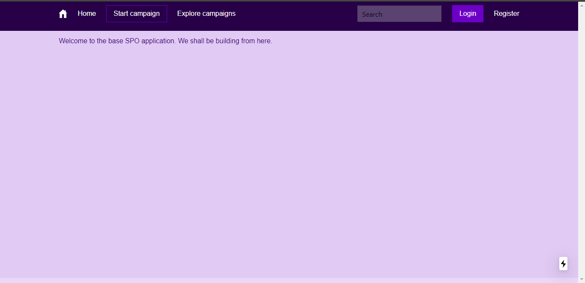
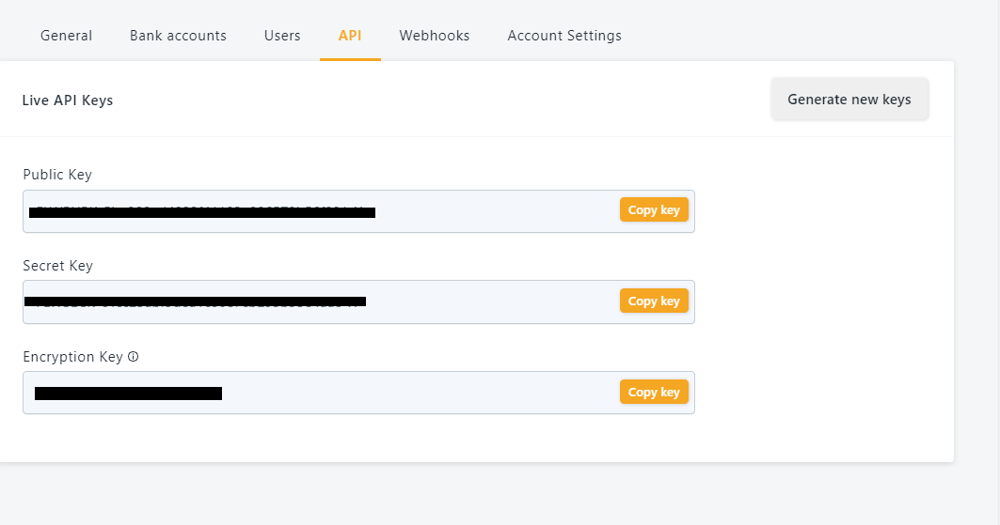

Integrate Payment with Flutterwave and Facebook Authentication into a React Application.
Hey there you have gone through the react documentation and some resources here and there and you are ready to put this knowledge to use. In this tutorial we are going to apply react knowledge by integrating payment into a react application. So I built spyo.com, a campaign platform where brands get support from their fans in a bid to grow. Spyo was built using NextJs - A framework for building react applications, MongoDB a NoSQL database on documents and Bulma react UI library kit and uses Flutterwave - An african payment solution provider to make and accept payments from customers anywhere in the world. By the end of this tutorial you should have build some part of Spyo, and learned the underlaying react concepts. The tutorial will cover authentication with Facebook, and the integration of payment with Flutterwave.
React concepts
In this tutorial we are going to cover the following react components or concepts.shall cover in this tutorial.
- React funtional components
- Props
- Hooks
- Ref
- Suspense
- Lazy loading
Lets get started
Installing required applications to run application
The first step to this tutorial will be installing all relevant dependencies. Make sure you have the following installed Node Js for running the base application we shall be building on, Mongo for application database, git to clone the base app repository. After installing all dependencies required to run the app, the next step is to clone the application.
Cloning base app repo
Open your terminal and change to the directory on your PC you wish to clone the app and run the git clone command.
git clone --recursive https://github.com/tanerochris/spo-tuto-base.git
Install dependencies with yarn
yarn install
Running the app
When you are done cloning, the name of application folder will be spo-tuto-base. Change to the spo-tuto-base directory and run yarn to start the application. We will start by running the application in developer mode.
cd spo-tuto-base
yarn dev
In your browser go to the url http://localhost:3000, you should see the base interface we shall be building with. To focus only on the essential react concepts to be presented in this writeup we have setup the application with some design and functionality already.

To run the application in production mode, you first build the app for optimizations by NextJS framework then run app.
yarn build
yarn start
NextJS comes with react installed. To check for the version of react installed, open a new terminal session
yarn list --pattern --depth=0 "^react*"
You should see the version of react installed together with other react packages. In my own case the above command produces the following output at the terminal. Notice we are working with version 16.13.1 of the react library which is currently the latest at the time of this writing.
$ yarn list --pattern --depth=0 "^react*"
yarn list v1.22.4
warning Filtering by arguments is deprecated. Please use the pattern option instead.
├─ react-dom@16.13.1
├─ react-is@16.13.1
├─ react-refresh@0.8.3
└─ react@16.13.1
Done in 1.67s.
Structure of the application
We are going to look at the struture of the app, where each item will fit in, some screen shots at the output we wish to obtain.
.
|-- LICENSE // hello
|-- README.md
|-- app.properties
|-- components
| |-- partials
| `-- theme
|-- helpers
|-- middlewares
| |-- Database.js
| |-- Session.js
| `-- index.js
|-- models
| `-- user
|-- node_modules
|-- package.json
|-- pages
| |-- _app.js
| |-- api
| `-- index.js
|-- public
|-- schemas
NextJs is an opinionated framework, it requires the pages and public folders to be present in the directory structure and located at the root level. We will add other directories to hold specific items of our application. Below is a summary detail of what each directory should contain. Note this is not specific to react or NextJS so you can define your own structure.
- The pages directory will hold the different web pages of our application, and api endpoints which will go under the pages/api directory. NextJs uses a file name pattern for url routing where each page or api is associated to a route based on its file path from the pages folder.
- The public directory hosts static assets such as images, fonts just to name a few. The component folder holds application ui or page components such as partials and theme.
- The models folder to hold MongoDB data models the application data.
- A helper folder to hold utility functions.
- A middlewares folder to hold api routes middleware functions.
- An app.properties file to hold variables that will be used across the app.
Let’s start building with react
Building the Signup - Authenticating with Facebook Login
In react application is broken down into components were each component can be seen as an independent re-usable piece of code. In react there are two types of components functional components and class components. In this tutorial we shall using functional components as they allow us to use the concepts of hooks. Functional components are stateless components while class components are stateful as the come with a built-in component state object. Functional components make use of the useState hook to implement state to a component.
Class component
import React from 'react';
class Signup extends React.Component {
state = {}
render() {
return <>
A React Class Component.
</>
}
}
export default Login;
Functional Component
import React from 'react';
const Login = (props) => {
return <>
A react functional component.
</>
}
export default Login;
props vs state
In react the props object is used to pass information from a parent component to a child component. Attributes of a component become keys in the props object and the passed values are accessed through these attribute keys. In a react class component the prop object is imutable unlike the case of functional components. React class components manage component state by using the state property and setState method to update the state.
Now we are going to create our SignUp component that will represent the Signup page and authenticate with Facebook Login.
Step 1
In the pages folder create the file signup.js and type in the following code.
import axios from 'axios';
import FacebookLogin from 'react-facebook-login';
import { useRouter } from 'next/router';
import { getSession } from '../helpers/session-helpers';
import AppHeader from '../components/partials/appHeader';
const Signup = (props) => {
const [errorMessage, setErrorMessage] = useState('');
const router = useRouter();
const onSignUpResponse = (response) => {};
return (
<>
<AppHeader session={props.session}/>
<main>
<div className="alert-error">
<span>{errorMessage}</span>
</div>
<div className="auth-container bg-secondary" >
<div>
<FacebookLogin
appId="635054340432342"
autoLoad={false}
textButton=" Register with Facebook"
fields="name,email,picture"
callback={onSignUpResponse}
cssClass="social-button fb-button"
icon="fab fa-facebook-square" />
</div>
</div>
</main>
</>
);
}
function isBrowser() {
return typeof window !== 'undefined';
}
export async function getServerSideProps( { req, res }) {
const sessionString = await getSession(req, res);
const session = JSON.parse(sessionString);
if (!isBrowser() && session.user) {
res.writeHead(302, { Location: '/' });
res.end();
}
return { props: { session }}
}
export default Signup;
Step 2
Install the react-facebook-login package for Facebook login button and the axios package to make api calls to save user credentials.
yarn add react-facebook-login axios
To authenticate with facebook you need to go to developers.facebook.com and create an application to have an app id. Copy your app Id and make it the value of the appId attribute of the FacebookLogin component above. Here is an online that tutorial that shows how you can generate an appId for your app. When you are done setting up your app and updating the appId property of the FacebookLogin button, reload the Signup page. You should have the result below.

Notice the isBrowser and getServerSideProps functions, isBrowser tests if the component is running from a server or browser window and getServerSideProps is a NextJs function to pass properties to the client component on server-side rendering. We can have our sign up component without the above functions, but in our case we want to track if a user has an active session and redirect the user to the index page. We are using the NextJS router and useState when we cover react hooks later in the tutorial.
Data returned by the getServerSideProps function is passed as an argument to the Signup functional component. This argument represents the properties of the functional component. Props properties can also be passed to other child components as attributes as we can observe with the <AppHeader session={props.session} />.
<AppHeader session={props.session} />
Step 3
Now let’s connect the signup with the backend to save registered users to the database. The base app backend is already setup for authentication. Replace the onSignUpResponse callback with the following code.
const onSignUpResponse = (response) => {
if (!response.id) {
// prints error to screen
setErrorMessage('Unable to sign up to Facebook.');
return false;
}
const postBody = { ...response, providerAccessToken: response.accessToken, provider: 'facebook'};
return axios({
method: 'POST',
url: '/api/user/signup',
postBody,
validateStatus: () => true
})
.then((res) => {
if (res.status === 200) {
// redirect to login page
router.push('/login');
} else {
setErrorMessage(res.data.message);
}
})
.catch((error) => {
setErrorMessage(error);
});
};
For the Facebook button to work properly we need to do one more thing.
Step 4
Facebook authentication must be done over https. To be able to that on localhost we will need to download Ngrok to expose our server to the internet, this will equally create an https link we can use as domain on our facebook app settings. When you must have downloaded ngrok, save the executable in your project folder or where you can easily reach it. I saved mine one directory above my project. Make sure the spo-tuto application is running, copy the port number and in your terminal run the ngrok program.
../ngrok.exe http 3000
Ngrok will create a proxy to your local server. For the free account the generated link is valid for 7 hours 49 minutes.

Step 5
Copy the https link, go to the dashboard of the Facebook app you created earlier, follow Settings > Basic scroll down to Website and update the site URL field. Note if you don’t do this Facebook will not recognize the domain accessing its auth service and your login will fail and Login with facebook will not work.

Step 6
Now we go to the browser link to the secured link generared by ngrok. Try to Register with Facebook, the users object is returned with information concerning the user such as Name, email, id and profile picture, which is saved to the database and redirects us to the login page.
The login page has been implemented, open pages/login.js you will notice there is no significant difference with the signup page. Separating both files was to allow for subsequent updates on other means of authentication and equally separating the login process from the signup process. After login with Facebook you should see the index page.

Intergrating Flutterwave
We are now going to integrate Card payments with Flutterwave in our application. Some react concepts we will come across are react hooks, how to manipulate the Virtual DOM, suspense and lazy loading.
Hooks
Before integrating Flutterwave lets first talk about Hooks. Hooks were introduced in react version 16.8 , to give developers the ability to manipulate state and use react features in functional components. In this tutorial we look at some of the common hooks useState, useEffect and useRef.
- useState hook is an api that allows the user to manage component state. That is if you have a state variable (a variable you want to track when it changes and update accordingly), useState will initialise the variable and return a function you can use to update the variable.
const [variableName, setVariableState] = useState('initialValue')The function setVariableState will be used to update the variable.
- useEffect hook accepts a function and runs this function during a render phase or when component state changes. You can pass a useEffect an array of state variables, useEffect will run the passed function each time any of these variables changes. Passing an empty array will make useEffect to run just once. You can have many useEffect calls in your component.
useEffect( () => { // this function will be run everything as application is rerendered. }) - useRef hook is used to manipulate DOM, it is recommendated not to over use it. React uses a virtual DOM, useRef api will give the programmer access to the real DOM elements.
Step 1: Building the Transaction and Payment widget
The Transaction component will make use of hooks. The transaction page will contain the list of payments made to the platform. Also we will create a paymentWidget which will be called from the payment modal. Users of SPYO top up their accounts with cash which they can later use on the platform to either reward fans who support their campaign or support businesses to reward fans.
Create a file pages/transactions.js and write in the following code.
// pages/transactions.js
import { useState, useEffect, useRef } from 'react';
import path from 'path';
import mongoose from 'mongoose';
import PropertiesReader from 'properties-reader';
import { getSession } from '../helpers/session-helpers';
import AppHeader from '../components/partials/appHeader';
function isBrowser() {
return typeof window !== 'undefined';
}
const Transactions = ({session, currency, errorMessage, topUpQuota}) => {
const [error, setErrorMessage] = useState('');
const [runningBalance, setRunningBalance] = useState(0.0);
const [totalBalance, setTotalBalance] = useState(0.0);
const [transactions, setTransactions] = useState([]);
const paymentModalRef = useRef(null);
const openPaymentModal = () => {
paymentModalRef.current.classList.add('is-active');
}
return <>
<AppHeader session={session} errorMessage={error || errorMessage} />
<main className="columns">
<aside className="column is-hidden-mobile"></aside>
<article className="column is-two-thirds bg-default transaction-container">
<div className="transaction-header bg-primary">
<div className="header">
<h2 className="">Transactions</h2> <button className="button is-accent" onClick={openPaymentModal}>Top Up</button>
</div>
<div className="columns sub-header">
<div className="column balances">
<span class="total is-text-warning">Balance: {totalBalance} {currency}</span>
<span class="running">Running: {runningBalance} {currency}</span>
</div>
<div className="column filters is-hidden-mobile">
</div>
</div>
</div>
<div className="transaction-content">
<table class="table is-bordered">
<thead className="bg-primary">
<th>#Ref</th>
<th>Reason</th>
<th>Amt / {currency}</th>
<th>Balance / {currency}</th>
<th>Date</th>
</thead>
<tbody>
{
transactions ?
transactions.map( (transaction, index) =>
<tr key={index}>
<td>{transaction.serial}</td>
<td>{transaction.reason}</td>
<td>{transaction.amount}</td>
<td>{transaction.amount - topUpQuota*transaction.amount}</td>
<td>{transaction.createdAt}</td>
</tr>) : <tr>No transaction.</tr>
}
</tbody>
</table>
</div>
</article>
<aside className="column is-hidden-mobile"></aside>
</main>
</>
}
export async function getServerSideProps( { req, res }) {
const sessionString = await getSession(req, res);
const session = JSON.parse(sessionString);
const properties = PropertiesReader(path.resolve('app.properties'));
// amount charged for each transaction to the user, ie. platform charges
const paymentQuotaTopProp = 'payment.quota.topup';
const paymentQuotaTop = properties.get(paymentQuotaTopProp);
if (!isBrowser() && !session.user) {
res.writeHead(302, { Location: '/login' });
res.end();
}
const currency = session.user.currency || 'XAF';
return {
props: {
session,
currency,
topUpQuota: Number(paymentQuotaTop)
}
}
}
export default Transactions;
In the above code we used useState hook to create and intialize state variables transactions,runningBalance, totalBalance and errorMessage. Next will be creating the PaymentModal and PaymentWidget components. Notice we already have an openPaymentModal onClick handler to registered on the Top Up button to make payments to the platform.

The PaymentCardWidget component has been included in the spo-tuto-base repo, it is found in the component/partial/widgets/PaymentCardWidget.js file.
// component/partial/widgets/PaymentCardWidget.js
import React, { useState, useRef } from 'react';
import { useRouter } from 'next/router';
import { usePaymentInputs } from 'react-payment-inputs';
import axios from 'axios';
import PaymentIcon from "react-payment-icons-inline";
import images from 'react-payment-inputs/images';
const PaymentCardWidget = ({currency, quota}) => {
...
// initiate a payment request
const createPaymentRequest = () => {
...
}
// submit extra data to start payment
const initiatePayment = (payload) => {
...
}
return <>...</>
}
export default PaymentCardWidget;
Create the modal component from which we are going to call the PaymentCardWidget component above.
// component/partial/modal/paymentModal.js
import React, {useEffect, useRef} from 'react';
import PaymentCardWidget from '../widgets/PaymentCardWidget';
const PaymentModal = React.forwardRef((props, ref) => {
const close = () => ref.current.classList.remove('is-active');
return (
<>
<div class="modal payment-modal" ref={ref}>
<div class="modal-background"></div>
<div class="modal-content bg-default">
<PaymentCardWidget modal={ref} {...props} />
</div>
<button class="modal-close is-large" aria-label="close" onClick={close} ></button>
</div>
</>
)
})
export default PaymentModal;
We are almost done with the payment UI. Import the PaymentModal component into the Transaction Page.
...
import PaymentModal from '../components/partials/modals/paymentModal';
...
Below the <table> closing tag, add the PaymentModal component.
<PaymentModal ref={paymentModalRef} {...{currency, paymentUrl, quota: topUpQuota}} />
Note the ref attribute, in react you will create a reference only on a native HTML tag, since the modal we are targetting is instead found in the PaymentModal componenent we will forward the reference to the div element present on the PaymentModal component. You should notice on the PaymentModal component is wrapped in React.forwardRef call. This also allows us to control the child DOM from the parent component as can be seen in the body of the openPaymentModal function in Transactions Page Component.

Step 2: Create an account on Flutterwave
To integrate flutterwave api you will need to create and account on Flutterwave.
- Go to Flutterwave and fill the signup form.
- Check your email for verification link, you may have to check your spam for the email.
- Follow the verification email, you will need to specify how you want to use Flutterwave to accept payment.
-
Select how you will want to accept payment from flutterwave. Select the option of your choice, for my case I chosed “To Accept Payment as an Individual”.

- You will be asked to provide some documents to verify your identity.
- Go to settings and configure your application.
Step 3: Integrate Flutterwave
For a transaction to take place with Flutterwave three steps must be completed.
- Make a payment request
- Initiate payment
- Complete payment
- Verify transaction
We need to first download the
flutterwave-node-v3package. We can now move to the next stage.
yarn add flutterwave-node-v3
We are not yet there, lets setup keys that will enable us connect to the flutterwave platform and make payments. In your Flutterwave dashboard settings > api your will see all keys required to connect and interact with the Flutterwave payment platform. Open the app.properties and add the following properties, replace placeholders with corresponding key values.
payment.flutterwave.encryptionKey=ENCRIPTION_KEY
payment.flutterwave.publicKey=PUBLIC_KEY
payment.flutterwave.secretKey=SECRET_KEY
payment.flutterwave.redirectUrl=http://localhost:3000/campaign/payment

Make a Card payment request
Move to the PaymentCardWidget found in components\partials\widgets\PaymentCardWidget.js, this file was shared earlier. Flutterwave requires different information for different card payments. The functioncreatePaymentRequest sends a payload to the server which calls the Charge api endpoint of Flutterwave, the response body returned by Flutterwave contains a meta property which defines the authentication procedure to use to charge or initiate payment on the card. Depending on the card additional information might be needed to complete payment. pages\api\transaction\cardPayment.js backend controller processes payload from the createPaymentRequest client request.
Initiate payment request
Once an initiate payment request is made the flutterwave returns a response body
Your Pages site will use the layout and styles from the Jekyll theme you have selected in your repository settings. The name of this theme is saved in the Jekyll _config.yml configuration file.
Support or Contact
Having trouble with Pages? Check out our documentation or contact support and we’ll help you sort it out.